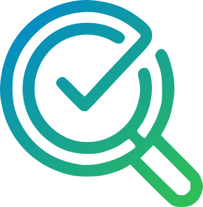

سابر
تحقق من الأخبار
أدخل أو الصق أي خبر أو ادعاء أدناه للتحقق من صحته ومصداقيته
0 / 5000
جاري التحقق من المعلومات
يتم التحقق من المصداقية وتحليل المصادر
عنوان النتيجة
وصف النتيجة
درجة الثقة
0%
المحتوى المفحوص
...
المصادر الرسمية
الأخبار المحفوظة
سجل عمليات التحقق التي قمت بحفظها
لا توجد أخبار محفوظة حالياً